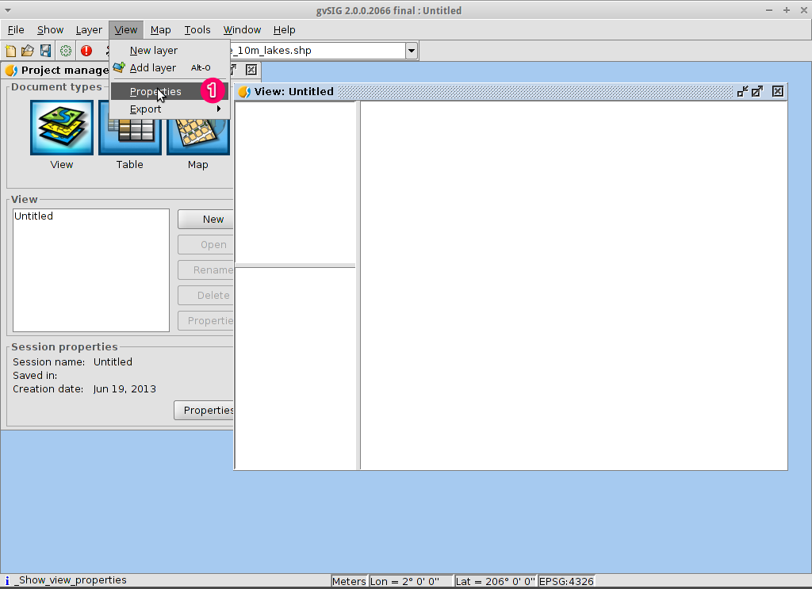
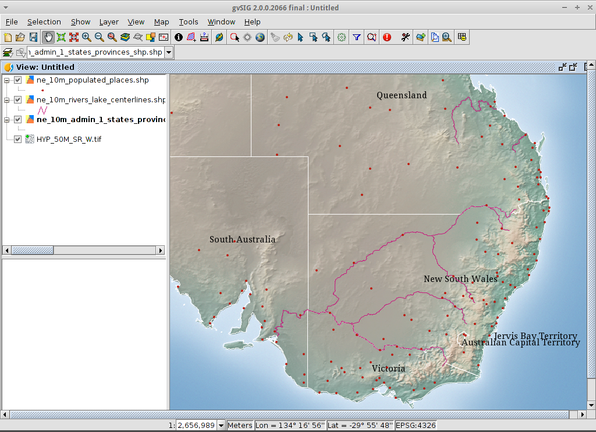
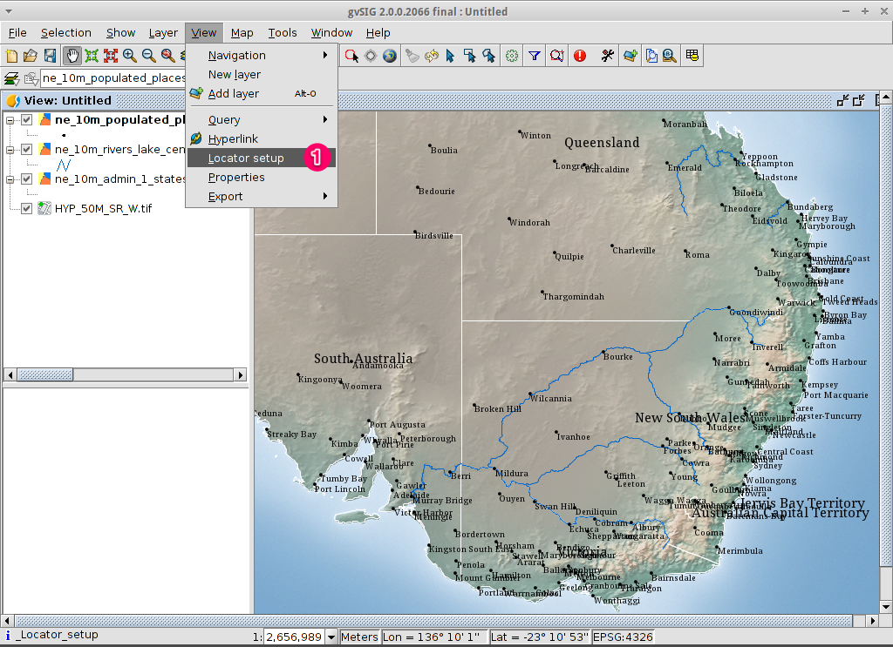
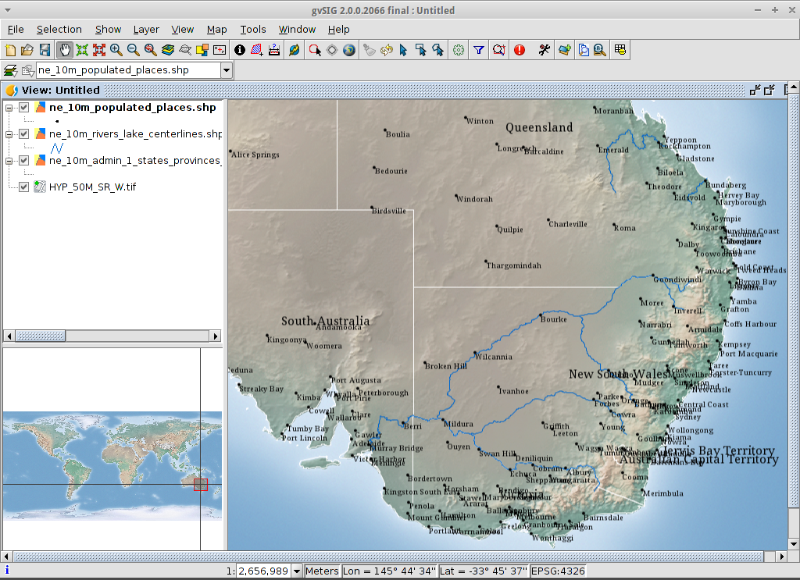
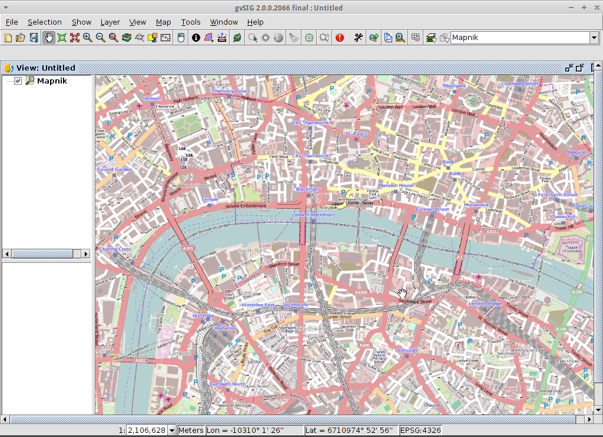
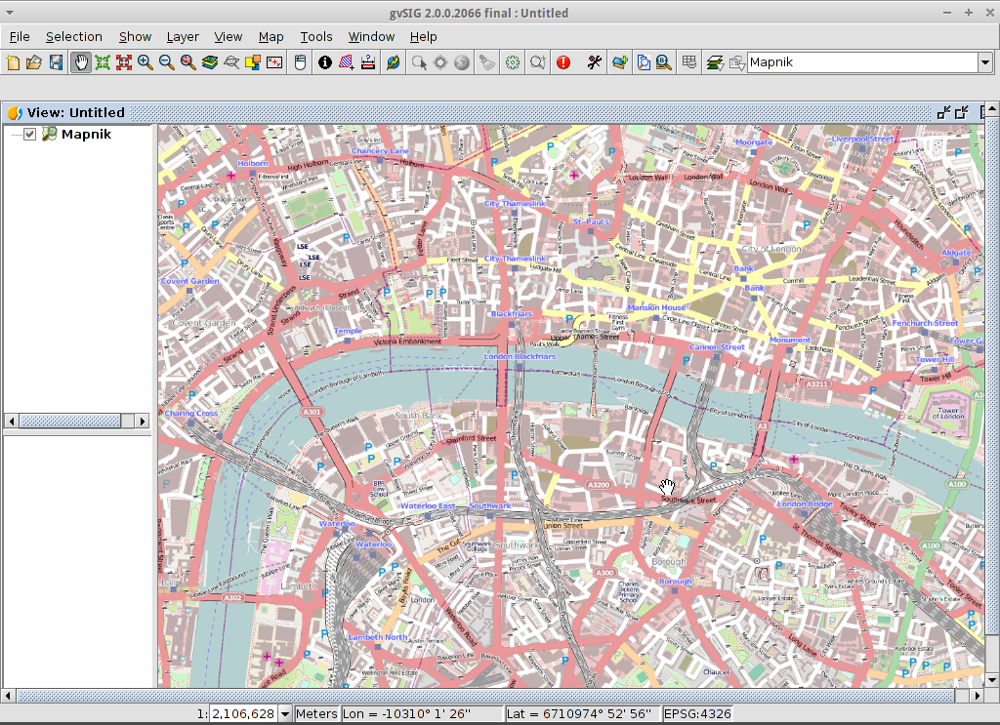

gvSIG Desktop Quickstart¶
gvSIG is a Geographic Information System (GIS), that is, a desktop application designed for capturing, storing, handling, analyzing and deploying any kind of referenced geographic information in order to solve complex management and planning problems. gvSIG is known for having a user-friendly interface, being able to access the most common formats, both vector and raster ones. It features a wide range of tools for working with geographic-like information (query tools, layout creation, geoprocessing, networks, etc.), which turns gvSIG into the ideal tool for users working in the land realm.
Contents
- Start gvSIG and create a view
- Define the projection of your view
- Add layers to the view
- Configure the view display
- Change how the layers look
- Add an overview or locator
- Select towns within a region
- Export selected features to a new shapefile
- Create a new map
- Save your project or exiting gvSIG
- Install an add-on
- Add an OpenStreetMap layer
- Add a WMTS layer
- What next?
Bemerkung
If gvSIG user interface becomes unresponsive, try Alt+f to open
the file menu for example. User interface should work again, then. This
bug only happens in the gvSIG distro for OSGeoLive. It doesn’t appear
in a normal gvSIG installation.
Bemerkung
Note for version gvSIG 2.3.1: To load raster files the user must have write permission in the folder where the file is. Otherwise the application will ask for a valid folder (with write permission). Since the „user“ user doesn’t have write permission in the „data“ folder, it will be necessary to select, when asked, a folder where the user does have write permission, like for example, „/home/user“.
Start gvSIG and create a view¶
- Select gvSIG from the application menu, . The application usually takes about a minute to startup.
- By default gvSIG opens with an empty project file with the ‚View‘ document type selected. However, on OSGeoLive, gvSIG has been configured to start with a default project. Click on the New Project button or go to . When prompted, you can select Discard Changes as we won’t be using the last project.
- Click on the New button to create a view. It will be opened automatically.
{kind=link}
Define the projection of your view¶
Select .
For the Current projection, click on the … button. This will open the New CRS dialog.
Using the dropdown list for Type, select EPSG.
Enter the EPSG code for the Coordinate Reference System. For this example we are using EPSG=4326, which is the WGS84 2D Geographic Projection. Then click on the Search button. This will list the selected CRS in the table below the search input field.
Select OK to return to the View Properties dialog. The EPSG code is now 4326 and that the map units have changed to degrees.
Select OK to return to the Project Manager.
{kind=link}
{kind=link}
- The view window consists of three zones.
- (2) The top-left cell contains a list of vector or raster layers being used in the view (i.e. Table-of-Contents).
- (3) The bottom-left cell displays the extent of the main view over a selected vector file.
- (4) The right cell is the main display area where raster and vector data is rendered.
{kind=link}
Add layers to the view¶
- Click on the Add layer icon in the main toolbar to open the Add layer dialog.
- Select Add in the Add layer dialog. By default the first tab is File so the Open file dialog will appear.
- Drill down to the
/usr/local/share/data/natural_earth2/directory. - Select the files as shown in the picture.
{kind=link}
Bemerkung
By default all formats are shown so we can select both vector and raster files at a time by keeping pressed the CTRL key.
- Click on the OK button to return to the Add layer dialog.
- Click on the OK button on the Add layer dialog to return to the view.
Configure the view display¶
- Click on the Maximize icon for a better viewing of the data.
- The size of the Table-of-Contents column can be adjusted using the mouse to help see long file names.
- In case the raster layer is on the top it should be moved manually to the bottom.

Zoom into a region¶
- By default the Zoom in tool is selected on the main toolbar.
- Use the mouse pointer to draw a bounding box around South-east Australia. Do this by selecting the top-left corner of the bounding box, holding down the left-mouse-button, and dragging the bottom-right corner of the bounding box over the selected area. Release the left-mouse button once you have the approximate area defined.
{kind=link}
Change how the layers look¶
Make a polygon transparent¶
- Select the
ne_10m_admin_1_states_provinces.shplayer using the left-mouse-button and click again with the right-mouse-button. - Select the submenu.
- The Layer properties dialog box will appear.
{kind=link}
Change the symbology of a vector layer¶
- Select the Symbols tab at the top of the Layers properties dialog.
- Select Choose symbol button so the Symbol selector dialog appears.
Remove the fill symbol and changing the border color¶
- Uncheck the Fill color box so the polygons are transparent.
- Click on the … close to Border color:.
- Choose white as color.
- Click on the OK button to return to the Symbol selector dialog.
- Click on the OK button to return to the Layers properties dialog.

Change the labelling of a vector layer¶
- Select the Labelling tab at the top of the Layers properties dialog.
- Change the text attributes to those shown on the image, then click on the Accept button.

View the result¶
Note that this is a very basic view showing a point, a line and a polygon vector file superimposed over a raster file. It is just as easy to have an aerial photograph or Digital Terrain Model as a backdrop to your vector data, or to show other vector data stored in different formats.
{kind=link}
Add an overview or locator¶
Select .
{kind=link}
- Click on the Add layer… button.
- Within the Add layer window, click on the Add button.
- Select the
HYP_50M_SR_W.tiflayer. - Click on the Open button to return to the Add layer window.
- Click on the Ok button and close the Configure locator window.

Now we can easily know where the view is located in the world.
{kind=link}
Select towns within a region¶
Select the region¶
- Select the
ne_10m_admin_1_states_provinces.shplayer using the left-mouse-button. - Select the Select by point icon in the main toolbar.
- Click the polygon representing the State of New South Wales. The polygon will go yellow or some other colour depending on your user preferences.
{kind=link}
Open the Selection by layer tool¶
- Select the
ne_10m_populated_places.shplayer using the left-mouse-button. - Select to open the Selection by Layer dialog
{kind=link}
Select the towns contained within a region¶
- Change the first selection criteria using the dropdown boxes on the left-hand side of the Selection by Layer dialog as shown in the picture.
- Change the second selection criteria as shown in the picture.
- Click the New set button to select towns within the selected polygon.
- Select the Cancel button in the Selection by Layer dialog to return to the view.
{kind=link}
Deselect the polygon so you can see what has happened¶
- Select the
ne_10m_admin_1_states_provinces.shplayer using the left-mouse-button. - Select the ‚Clear selection‘ icon in the main toolbar.
- You can now see that only those towns within New South Wales are selected.

Export selected features to a new shapefile¶
Select the output file format¶
- Select the
ne_10m_populated_places.shplayer using the left-mouse-button. - Select to start the export.
- Select Shape Format.
- Click on Next.
{kind=link}
Select the output file name¶
- Choose a folder and type the file name.
- Click on Open and then on Next.
{kind=link}
Reference system¶
- Choose the option Original (EPSG:4326) in order to keep the reference system of the view.
- Click on Next.
Export options¶
- Choose the option Selected features in order to export only the towns of New South Wales.
- Click on Export.
{kind=link}
View the result¶
- The new layer has been added to the view.
- In order to check that the export was ok set the original file as invisible. Only the towns of New South Wales should be shown.

Create a new map¶
- Select the Map document type in the Project Manager.
- Click on the New button to create a map.
- A new window is shown, where you can select the view to insert on the Map. Select the only view that you have and press Accept.
- The map will appear with the view selected.
Work with the map¶
- Additional elements like a scale and north arrow can be added to the map using the icons in the main toolbar or with the submenus in the menu.
- The map can be printed or exported to PDF or Postscript for incorporation into other works.
- Select the Close window icon to return to the Project manager

Save your project or exiting gvSIG¶
- Projects can be saved for use later by using the menu option, or
- Projects can be exited or closed by using the menu option.

Install an add-on¶
Open the add-ons manager¶
- Select . After a while, the Install package window will appear.
- Within the Install package window, select the option Installation from URL.
- Choose the repo URL shown in the picture.
- Click on the Next button.
{kind=link}
Find an add-on¶
- At the add-ons manager we can find plugins and symbol libraries.
- Type ‚Forestry‘ in the Fast filter text box.
- Check the add-on called Symbols: Forestry (it’s a symbol library).
- Click on Next.
{kind=link}
Finish the installation¶
- Click on Start downloading.
- Then click on Next.
- Finally click on Finish.
Although the new message indicates that a restart is needed, for symbol libraries it’s not necessary. We only have to restart when we install plugins.
Add an OpenStreetMap layer¶
- Now we are going to add OpenStreetMap cartography. Within a new view, in EPSG 3857, click on the Add layer… button.
- Choose the OSM tab.
- Select ‚Mapnik‘ from the available layers.
- Click on Ok.

View the result¶
A new layer has been added to the view. Just doing zoom over a region we could see the detailed Open Street Map data.
 

{kind=link}
Add a WMTS layer¶
WMTS is an evolution of WMS OGC standard based on tile management.
Select a server¶
- Within a view, click on the Add layer… button.
- Choose the WMTS tab.
- Choose the URL shown in the picture.
- Click on Connect.
- Click on Next.
{kind=link}
Select one of the available layers¶
- Select one of the available layers (e.g. bluemarble)
- Click on Add.
- Click on Next.
{kind=link}
Select image format and reference system¶
- Select image/jpeg as image format.
- Select EPSG:4326 (notice that the view must have the same SRS. If not then cancel, change it and start again).
- Click on Accept.
{kind=link}
A new layer has been added to the view.